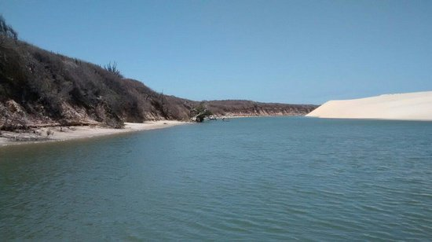
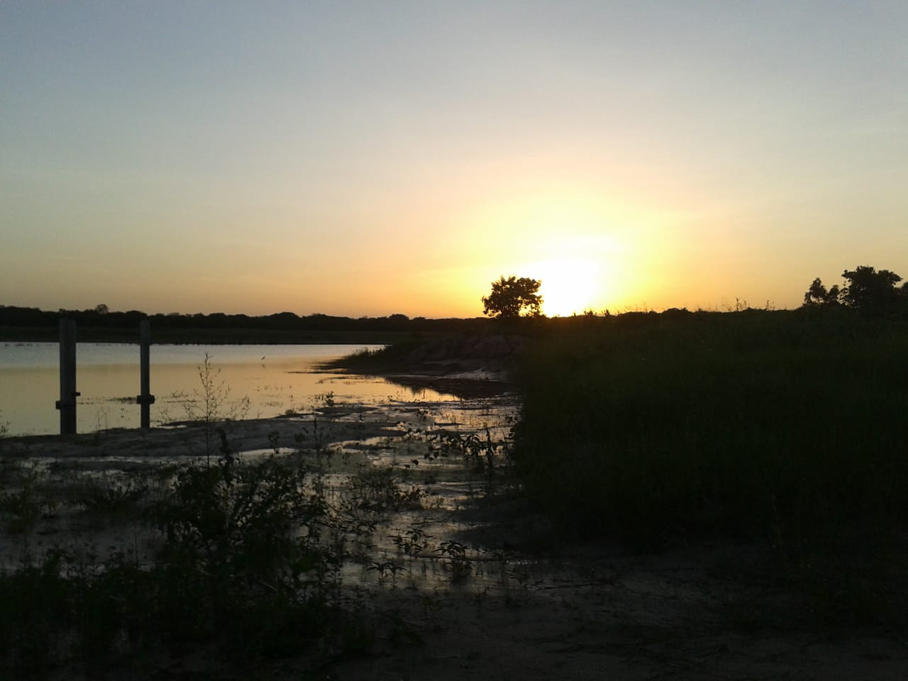
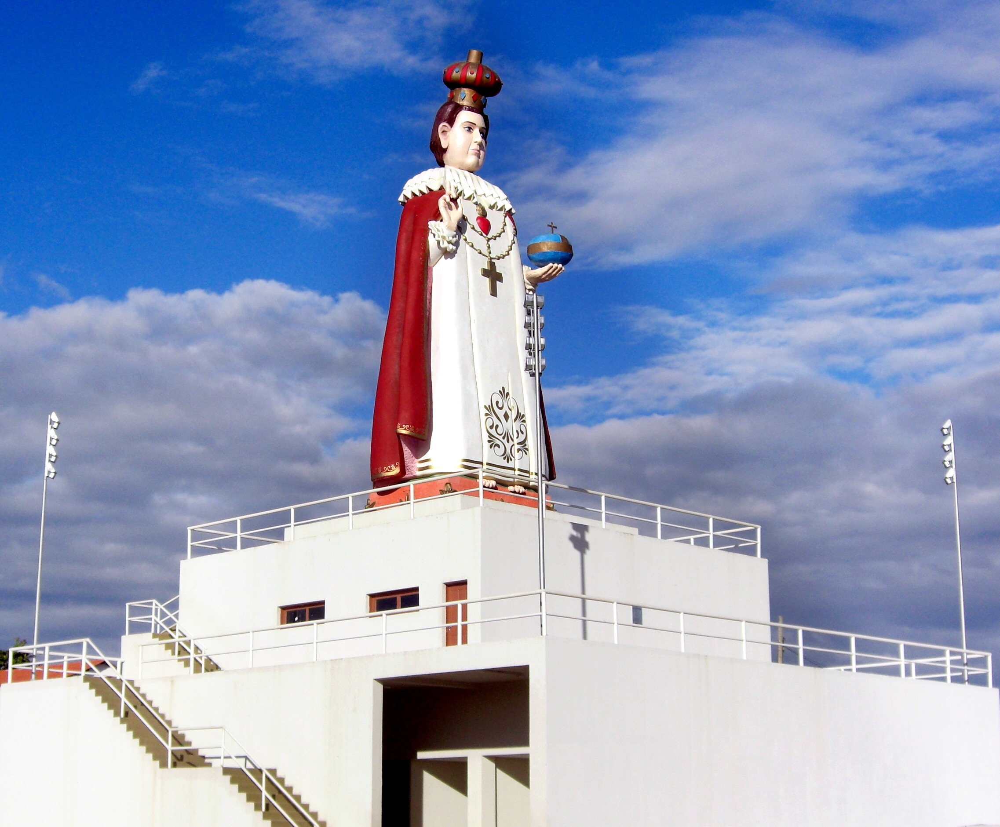

Informações técnicas sobre relevo, população, IDH etc.
| INFORMAÇÕES | |
|---|---|
| Municípios limítrofes | Norte: Pacajus; Sul: Ocara; Leste: Cascavel; Oeste: Barreira |
| Fundação | 13 de março de 1987 (34 anos) |
| Área total | 278,400 km² |
| Clima | Tropical semiárido brando |
| IDH | 0,633 — médio |
| PIB | R$ 71 220,209 mil |
| INFORMAÇÕES TERRITORIAIS | |
|---|---|
| Número de habitantes | 20 264 habitantes |
| Superfície de Chorozinho |
27 841 hectares
278,41 km² (107,49 sq mi) |
| Densidade populacional | 72,8 ha./km² |
| Altitude de Chorozinho | 53 metros de altitude |
| Coordenadas geográficas decimais |
Latitude:
-4.29974
Longitude: -38.4977 |
| Coordenadas geográficas sexagesimais | Latitude: 4° 47' 59'' Sul , Longitude: 38° 29' 52'' Oeste |
| INFORMAÇÕES DO MUNICÍPIO | |
|---|---|
| Endereço da Prefeitura Municipal de Chorozinho |
Chorozinho
Prefeitura de Chorozinho
Simplício de Carvalho, s/n - Vila Requeijão CHOROZINHO - CE, 62875-000 Brasil Work +55 85 3319-1163 Fax +55 85 3319-1112 |
| Telefone da prefeitura |
(85) 3319-1163
Internacional: +55 85 3319-1163 |
| Fax |
(85) 3319-1112
Internacional: +55 85 3319-1112 |
| Endereço electrónicoda prefeitura |
Não disponível.
|
| Site oficial do município | chorozinho.ce.gov.br |
| INFORMAÇÕES DO ADMINISTRATIVAS | ||
|---|---|---|
| Prefeito de Chorozinho | FRANCISCO DE CASTRO MENEZES JÚNIOR | |
| Partido politico | PDT | |
| INFORMAÇÕES DE TRANSPORTE | |
|---|---|
| Transporte urbano disponível | - |
| Aeroporto |
Aeroporto Internacional Pinto Martins
58.4 km
Aeroporto de Sobral
215.6 km
Aeroporto Dix-Sept Rosado
160.9 km
|
| INFORMAÇÕES DE DISTÂNCIA A OUTRAS CIDADES | ||
|---|---|---|
| São Paulo : 2314 km | Rio de Janeiro : 2132 km | Brasília : 1643 km |
| Salvador : 965 km | Belo Horizonte : 1826 km | Manaus : 2395 km |
| Curitiba : 2619 km | Fortaleza : 65 km mais perto | Goiânia : 1811 km |
| Belém : 1156 km | Porto Alegre : 3162 km | Guarulhos : 2293 km |
| Campinas : 2267 km | São Luís : 675 km | Recife : 579 km |
| Distância calculada em linha reta! | ||
Conheça mais sobre a história de Chorozinho.
Choro, segundo o dicionário Aurélio significa pequena lente que surge no sopé ou encosta de uma chapada residual e ainda Choró-Choró ?certa espécie de ave?. Entre outros, Chorozinho é diminutivo e é esse antigamente denominado, entre outros, vila que sobrevive e conserva a sua identidade.
Chorozinho nasceu com a construção da ponte sobre o Rio Choró no de 1932, quando o Governo da época decidiu realizar tal obra em virtude da construção a BR 116, para ligar Fortaleza ao Sul do País. Por sorte, as pessoas que habitavam as ribeiras do Rio Choró, foram necessárias na construção da ponte. Com essa construção, o DNOCS instalou o acampamento dos engenheiros e operários em um casa, a qual denominaram de Residência. O trabalho da construção da ponte, foi demorada haja vista as dificuldades encontradas na época para transportar o material. Desse modo, o DNOCS contratou muitas pessoas da região para trabalharem na construção da ponte. Assim sendo, essas pessoas deslavam-se de suas casas para morar nas proximidades de seu trabalho, criando-se assim, o povoado. Gentílico: chorozinhense
Formação Administrativa: Em divisão administrativa referente ao ano de 1933, figura no município de Pacatuba o distrito de Currais Velhos. Em divisões territoriais datadas de 31-XII-1936 e 31-XII-1937, o distrito de Currais Velhos figura no município de Guarani. Pelo decreto estadual nº 448, de 20-12-1938, o distrito de Currais Velhos passou a denominar-se Chorozinho. Pelo decreto-lei estadual nº 1114, de 30-12-1943, o município de Guarani passou a denominar-se Pacajus.
No quadro fixado para vigorar no período de 1939-1943, o distrito já denominado Chorozinho figura no município de Pacajus. Em divisão territorial datada de 1-VII-1950, o distrito de Chorozinho, figura no município de Pacajus. Assim permanecendo em divisão territorial datada de 1-VII-1960. Elevado à categoria de município com a denominação de Chorozinho, pela lei estadual nº 6436, de 17-07-1963, desmembrado de Pacajus. Sede no antigo distrito de Chorozinho. Constituído do distrito sede.
Em divisão territorial datada de 31-XII-1963, o município é constituído do distrito sede. Pela lei estadual nº 8339, de 14-12-1965, é extinto o município de Chorozinho, sendo seu território anexado ao município de Pacajus, como simples distrito. Em divisão territorial datada de 31-XII-1968, Chorozinho é distrito de Pacajus. Assim permanecendo em divisão territorial datada de 18-VIII-1988.
Elevado à categoria de município com a denominação de Chorozinho, pela lei estadual nº 11305, de 13-03-1987, desmembrado de Pacajus. Sede no antigo distrito de Chorozinho. Constituído do distrito sede. Instalado em 01-01-1989. Pela lei municipal nº 56, de 25-07-1991, são criados os distritos de Campestre, Cedro, Patos dos Liberatos, Timbaúba dos Marinheiros e Triângulo. Em divisão territorial datada de 17-I-1991, o município é constituído de 6 distritos: Chorozinho, Campestre, Cedro, Patos dos Liberatos, Timbaúba dos Marinheiros e Triângulo. Assim permanecendo em divisão territorial datada de 2005 Alteração toponímica distrital Currais Velhos para Chorozinho alterado, pelo decreto estadual nº 448, de 20-12-1938.
Fonte: IBGE
Saiba mais sobre os melhores lugares e o que fazer em Chorozinho
Rio Choró
Lagoa dos Marinheiros - Distrito de Timbaúba
Lagoa dos Patos - Distrito de Patos dos Liberatos
Santuário do Menino Jesus de Chorozinho

Veja como chegar nos melhores pontos de Chorozinho
SAIBA COMO CHEGAR EM CHOROZINHO-CE: